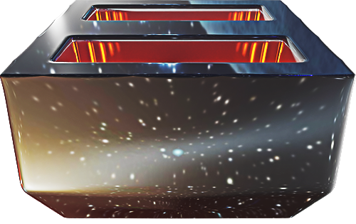
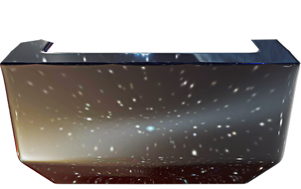

Special Early Alpha Feature: Due to the vastness of space, you may need to size the page down to 90% to prevent enemies exiting the bottom from resizing the viewport dimensions.


Original game & assets by Chris/abstractedfox, copyright 2023. Toaster reflection texture from NASA/JPL-Caltech